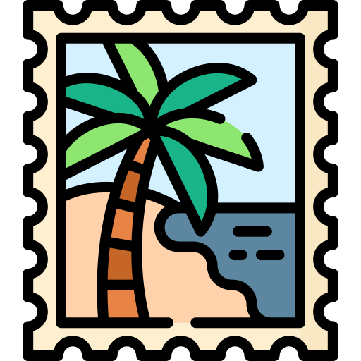

Mon parcours
J'ai fait un Baccalauréat Général, avec les spécialités Mathématiques, Physique-Chimie et Anglais (AMC). J'ai obtenu mon diplôme avec la mention Bien. Après cela, j'ai intégré l'IUT d'Orsay (Université Paris-Saclay) en BUT Informatique.
Mes expériences
Professionnelles
J'ai déjà effectuer deux CDD en tant qu'employé polyvalent dans le restaurant Chez Ennio aux Clayes-sous-Bois. Ces expériences m'ont permis de découvrir le monde professionnel et de renforcer mon autonomie.
Stages
J'ai aussi pu réaliser un stage d'observation d'une semaine en février 2024 chez M141, une entreprise de post-production audiovisuelle. Cette expérience fut très enrichissante car j'ai pu découvrir le monde professionnel dans un domaine différent de la restauration mais aussi car j'ai eu la chance d'avoir beaucoup d'autonomie et de pouvoir réaliser des tâches concrètes telles que la vérification des productions ou encore le prémontage. J'ai obtenu une lettre de recommandation suite à ce stage.
Mes compétences
Informatiques
Base de Données : SQL, PL/SQL, Oracle, Modèles Conceptuels de Données (MCD), Schémas Relationels (SR)
 Développement Web : HTML, CSS, Penpot
Développement Web : HTML, CSS, Penpot
Dévelopement : C++, Java, Python, Git
 Systèmes d'exploitation : Debian, Ubuntu, Windows
Systèmes d'exploitation : Debian, Ubuntu, Windows
Linguistiques
 Français : Langue maternelle
Français : Langue maternelle
 Anglais : Niveau B2
Anglais : Niveau B2
Allemand : Niveau B1
Qualités
- Assidu
- Sérieux
- Autonome
- Motivé
Centres d'intérêts
Sportifs
Je fais du badminton en compétition depuis 5 ans.
 J'aime aussi faire du football lorsque j'ai du temps libre.
J'aime aussi faire du football lorsque j'ai du temps libre.
Autres
Je suis un amateur de jeux vidéo en coopération.
Je fais de la philatélie.
 J'adore lire des livres et des magazines scientifiques.
J'adore lire des livres et des magazines scientifiques.
Ambitions
A court terme j'aimerais mener des recherches sur les nouvelles technologies, notamment l'Intelligence Artificielle. Sur un plus long terme je souhaite travailler sur des projets d'innovations.